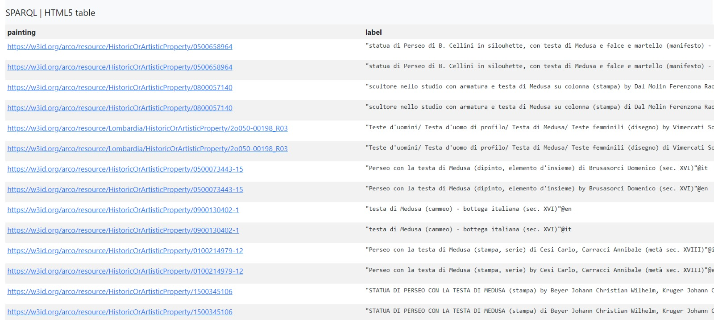
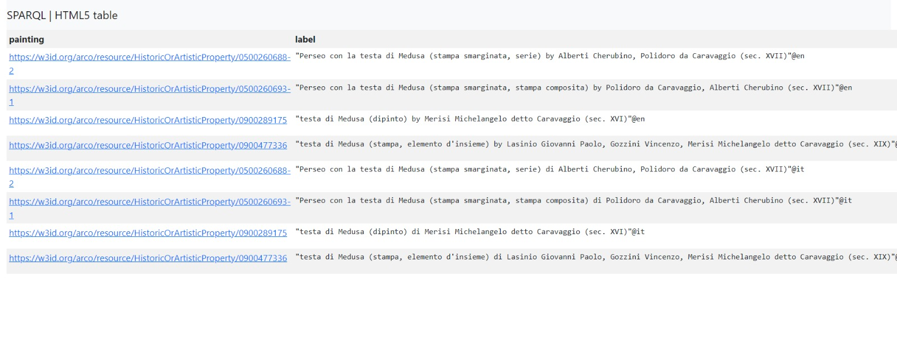
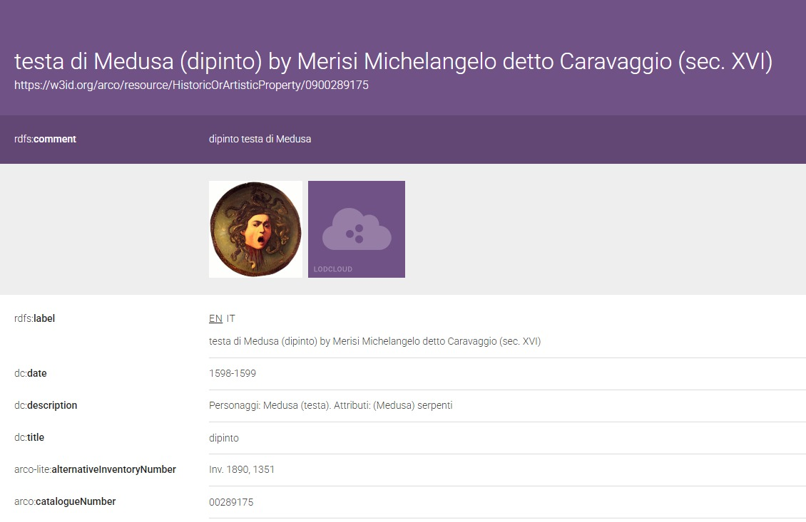

PREFIX rdfs: "http://www.w3.org/2000/01/rdf-schema#"
PREFIX arco: "https://w3id.org/arco/ontology/arco/"
SELECT DISTINCT ?painting ?label
WHERE {
?painting a arco:HistoricOrArtisticProperty ;
rdfs:label ?label .
FILTER(REGEX(?label, "Testa di Medusa", "i"))
}
LIMIT 100
Creating SPARQL querys
Query 1
First, we used the following query to find “Testa di Medusa” by Caravaggio in the ArCo database, after choosing the subject for our topic:
Result

This gave us a large number of irrelevant results, so we created a new query to narrow them down and find the chosen painting.
Query 2
In the second query we used the name of the author and commands such as UNION, OPTIONAL, DISTINCT, FILTER REGEX,ORDER BY, LIMIT.
PREFIX rdfs: "http://www.w3.org/2000/01/rdf-schema#"
PREFIX arco: "https://w3id.org/arco/ontology/arco/"
PREFIX a-cd: "https://w3id.org/arco/ontology/catalogue/"
SELECT DISTINCT ?painting ?label
WHERE {
{
?painting a arco:HistoricOrArtisticProperty ;
rdfs:label ?label .
FILTER(REGEX(?label, "testa di medusa", "i"))
FILTER(REGEX(?label, "caravaggio", "i"))
}
UNION
{
?painting a arco:HistoricOrArtisticProperty ;
rdfs:label ?label .
FILTER(REGEX(?label, "testa di medusa", "i"))
?painting a-cd:hasAuthor ?authorEntity .
?authorEntity rdfs:label ?authorLabel .
FILTER(REGEX(?authorLabel, "Caravaggio", "i"))
}
OPTIONAL { ?painting a-cd:depiction ?depiction }
}
ORDER BY ASC(?label)
LIMIT 10
Result

By altering the query we got 8 links as a result. From the list it was easy to find our painting. We chose the following link:
Link